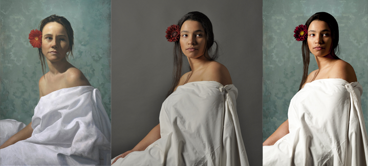

Recriação
Este trabalho vai ao encontro de uma proposta apresentada na cadeira de fotografia e tinha como objetivo recriar uma pintura. Estre trabalho foi realizado a par da minha colega Inês Marques Xavier. Após uma pesquisa e análise de diversas obras optamos por escolher uma artista que não fosse tão conhecida no mundo artístico. Com isto escolhemos Arantzazu Martinez uma artista Espanhola, que pinta sobretudo a óleo sobre tela, como por exemplo a obra que escolhemos que se chama “La chica de la flor roja”.
A sua pintura tem uma técnica clássico renascentista, mas ao fazer o retrato das personagens Arantzazu Martinez usa um estilo hiper-realista e nas suas obras também insere alguns elementos fantásticos, com isto ela consegue criar mundos fantásticos e cheios de magia, mas que fazem parte do nosso quotidiano e estão presentes no nosso mundo, os temas das suas obras tem características renascentistas e do romantismo. Inicialmente iríamos trabalhar e falar de duas obras, mas depois optamos por esta pois achamos que era mais interessante de trabalhar. Quando foi para fotografar no estúdio tentamos fazer com que a fotografia fosse o mais semelhante à obra, na sua realização o professor ajudou-nos a colocar a luz na posição correta e antes disso colocamos todos os matérias presentes na obra o mais parecido possível, tanto no cabelo, na própria cor da pele e nas manchas que a personagem possui na bochecha e no ombro.
Depois da realização da fotografia tivemos de editar a fotografia em termos de figura fundo, escurecer ainda mais o lado direito da imagem bem como enquadrar a fotografia.